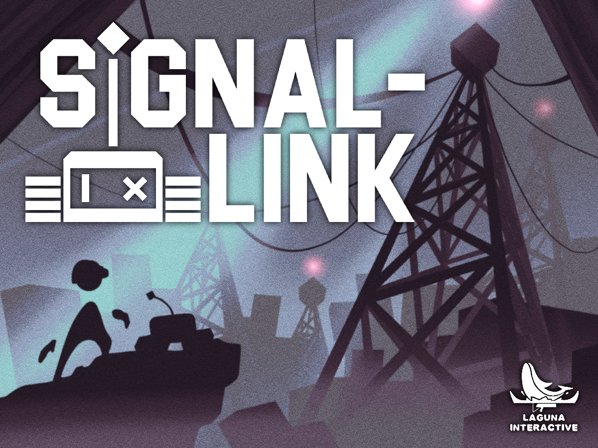
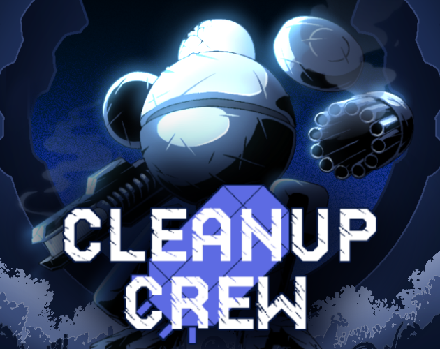

Game Development
Programming, Game Design, Art, and everything inbetween to create the best user experience!
Programming, Game Design, Art, and everything inbetween to create the best user experience!
Made with Unity and C#, published on Itch.io for WebGL or downloadable

Infiltrate nearby radio towers in order to contact a distant civilization. Solve puzzles with your robot companion!
Team: Laguna Interactive
Roles: Programmer, Level Design, 3D Animator, Gameplay Design, & Narrative Design
Play Team Page Game Jam- Designed the gameplay loop around throwing and controlling a companion robot to solve puzzles
- Contributed deisgns for the second level map and puzzles
- Design the narrative to take place after the events of Docing Bay (previous game) to reconnect the civilization left on earth with the civilization that left earth for space exploration
- Laser puzzle system utilizing ray casting to handle laser firing/sequencing and rigidbody interaction for pushing
- Pulley system utilizing spherecast to find the player then lerp its location to the machine
- 3D animation of the playable character's idle, waling, jumping, pushing, and pick up
- Designed the narratation for the story, connecting it back to the narrative

An infection outbreak has ravaged through your research team. Identify the infected and terminate them!
Team: Laguna Interactive
Roles: Lead Programmer, Gameplay Design, Narrative Design, UI/UX, Sound Design, & Level Design
Play Team Page Game Jam- Designed the gameplay loop around analyzing anomalies of incoming pods and deciding to accept/reject them, attempting to survive 6 days without letting an infected pod in
- Designed a level to have a playable area to analyze the anomalies with a window to see the accepting and rejection sequence
- Designed the narrative of the game focuses on the events prior to Cleanup Crew (previous game) where scientists are researching and gathering recources on other planets and experience a deadly infection outbreak
- Data randomizing with scriptable objects to randomly assign character order, infection, & infection anomalies
- Loading character data onto the UI of in-game monitors
- UI design of in-game monitors and its gameplay features based on data values
- Player movement and interaction using point-lerping and raycasting
- Gameploop sequencing for accepting/rejecting pods
- State checking based on infection, day system and power system to handle win/loss cases
- Sound system for anomalies monitoring and heart rate monitor (bpm data accurate)
- Gameplay deisgn, level design, and narrative

Return to Earth as you fight to survive and find resources to become stronger to eliminate the ongoing threat!
Team: Laguna Interactive
Roles: Programmer, Narrative Design, & Sound Design
Play Team Page Game Jam- Designed the gameplay loop to clear waves while capturing objectives and escaping or defeat waves infinitely for a highscore.
- The narrative focues on the return to earth humans make via mech suits to eliminate the robot outbreak they ran away from previosuly
- Visualizing 2D character sprites into 3D space utilizing sprite-swapping based on the x and y axis angles between character look direction and player look direction
- Gun sprite animations based on player movement (ie: jump, dash, walk, & landing)
- Wave system & objective wave system (Enemy spawn sequencing based on player position)
- Enemy navigation with navmesh into the game environment
- Double jump and dashing movement
- Player energy system to handle a dynamic dash cooldown
- Tutorial system (Checking for inputs in order to proceed to gameplay)

Scavenge for tribute as you piece together the real reason why you are here!
Team: Laguna Interactive
Roles: Gameplay Programmer, Level Design, Story, & Audio
Play Team Page Game Jam- Desgined the gameplay loop around a scavenger hunt with a hidden real objective
- The level was designed to resemble a realistic settlement on an island with obscure areas
- The focus of the narrative was to have a 'God' figure guide you on a tribute quest, where you uncover the real objective as you speak to the natives of the island
- Randomize item spawning based on an array of set spawn points in the enviroment
- Interaction and item pick up system utilizing raycasting
- 3D character idle animation
- Texture painting beach, grass, trails, and rock faces of the environment terrain utilizing textures from my team's artist
- Sound effect and music stystem
- Player movement system using rigidbody physiscs

Follow the path of revenge as you embark on an investigative journey up the nearby alpine mountains!
Play Devlog Show Page- Designed the gameplay loop to be top-down adventure game with combat, exploration, puzzle solving with a final boss
- Levels were designed to allow for rewarded exploration, strategic fighting scenarios, and puzzles in mind
- Designed a narrative about revenge and handling the opposing force of ice monsters and their presence around the land
- Player sword transforming system
- Player temperature system
- Ice block system
- Enemy and boss projectile/melees attack system
- Character sprites/animations and environment tilemaps
- UI design and art
- Lives/checkpoint flower system
- Sound effect and music system
- Composed all music tracks
- Enemy navigation and state checks
- Ice sliding system and puzzle design
- NPC and shop system
- Input mapping for desktop, controller, and arcade cabinet

Loot nearby supply drops to repair your getaway boat. Clear waves of zombies and survivors to save yourself!
Team Members: Ben Beary
Roles: Programmer, Game Design, 2D Art, UI/UX, Level Design, & Narrative
Play Game Jam- Designed the gameplay loop to be a top-down shooter with surviving waves of zombies and armed raiders to collect items to repair a boat and escape
- Design levels for the interior warehouse locations where there are supply drop waves
- Player health system and energy system
- Boat crafting system
- Player UI health, ammo, & energy
- Vehicle sprites (Cars & boats), item icon sprites, interior flooring sprites & shelving units sprites
- Loot system using scriptable objects
- Created a story narrative about surviving a zombie infection on an island by surviving collecting items to repair a boat to escapes

Join the adventure of a lone wanderer in a search to slay the demon who cursed him!
Team Members: Ben Beary, Alexander Price, & Daniel Perez-Gomez
Roles: Lead Programmer, Game Design, UI/UX, Level Design, Sound Design, & Narrative
Play Devlog- Designed the gameplay loop to be a top-down shooter that has a rouge-like leveling progression, but involves selecting and upgrade + downgrade and a final boss
- Levels were designed to provide challenge to position yourself for enemy waves and the boss fight with obstacles in the way
- Player attack and aiming system
- Player leveling ability system
- Player ability and item system
- Shop system
- Enemy wave and key system
- Enemy navigation and projectile types (Bottles, homing axe, rifle, shotgun and molotov)
- Boss 'bullet hell' attack system based on health states
- Wave system, key system, & shop system
- Narrative of the game based on a cursed cowboy that wants to end his curse by eliminating the demon that cursed him
Made into a HTML webpage with gameplay using CSS and Javascript.

I created a webpage using HTML, CSS, and Javascript (with the p5.play, buttons.js, scenemanager.js and p5.sound.js libraries) in order to create an interactive two player puzzle/obstacle course game. In addition to the complicated, timed, and intricate level design, I mapped the player controls to seemingly arbitrary inputs.
Play- Designed thhe level and gameplay loop to ensure that the level is impossible without both players and each player has their own color coordinated section (opposite color) in order to effectively progress
- Utilizing p5.play, buttons.js, scenemanager.js and p5.sound.js libraries to build the game architecture
- Use p5.play movement system to create a platforming maze
- Use collisions to handle in game buttons/platforms'
- Color coordination to guide player strategy/roles
- Strategically changed input controls to cause players to intertwine their hands on a shared keyboard
- Use p5.sound.js to handle sound importing
- Use Scenemanager to create menus and scenes

I created a website using HTML CSS and Javascript to tell the story of my linguistic background in an interactive game with 3 levels/pages. I strategically break the 3 languages into their own levels/pages in order to highlight them individually and to increase the difficulty over time.
Play- Designed the gameplay loop and levels around searching and memory game concepts
- Narrative works to inform the player of the struggle of learning languages or relate to players who learned multiple languages
- Gamify CSS hovering logic for the searching aspect of the game and image animations
- Use Javascript to randomize spawning of filler/distraction words, searchable elements, & image blockers in a certain area
- Utilizing Javascript's click logic and if statements to sequence order of the memeory aspect of the game

Play a pinball game that inverses the mood/feel/aesthetic of normal pinball machines. Cool colors, calming sounds, and relaxing.
Play- Designed the gameplay loop and level around pinball machines and their use of flippers to bounce the ball around to gain points
- Using Sound Library, Scenemanager, p5.play, and p5buttons libraries to create the game architecture
- Use p5.play to build the ball bounce and flipper
- Use Javascript to handle score system, sound effect system, and gameplay sequencing
- Use buttons.js to handle mouse inputed gameplay
- Use Sound Library to handle sound importing
- Use Scenemanager to create menus and scenes